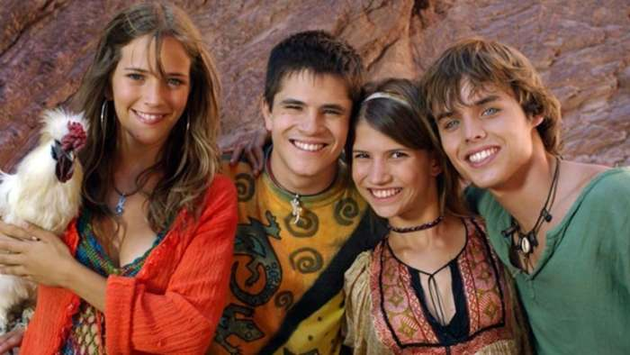

Erreway: 4 Caminos

Descripción: Secuela de la serie Rebelde Way. Cuatro amigos (Mía, Marizza, Pablo y Manuel) dejan su vida cómoda para salir de gira en un motorhome, enfrentando la vida adulta, conflictos amorosos, un embarazo y la búsqueda de sus sueños.
Año: 2004
Director: Ezequiel Crupnicoff